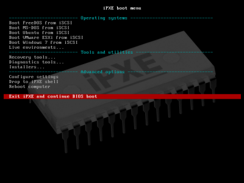

9 Unintended instalation
Team : LibreSys
Retrieve online : ?index.html
And on ?GitHub
Team: LibreSys
- Hoàng Thành Công github.com/hoangcongst
- Trần Xuân Giáp github.com/txgvnn
What is "Network booting"?
- Boot via Hardisk
- Boot via CD/DVD
- Boot via USB
- Boot via LAN
iPXE
What is iPXE ?
iPXE is the leading open source network boot firmware.
It provides a full PXE implementation
FEATURES?
- boot from a wide-area network
- boot from a web server via HTTP
- control the boot process with a script
- ...
How to setup boot from a wide-area network
- Server
- Client
-> Install DHCP server
-> Install TFTP server
-> Provide the boot image
-> Activate PXE boot
Configure DHCP server
default-lease-time 600;
max-lease-time 7200;
allow booting;
subnet 192.168.0.0 netmask 255.255.255.0 {
range 192.168.0.3 192.168.0.253;
option broadcast-address 192.168.0.255;
option routers 192.168.0.1; # our router
option domain-name-servers 192.168.0.1; # our router, again
filename "pxelinux.0"; # (this we will provide later)
}
group {
next-server 192.168.0.2; # our Server
host tftpclient {
filename "pxelinux.0"; # (this we will provide later)
}
}Configuration TFTP server
$wget $MIRROR_DEBIAN/$PATH/netboot.tar.gz
$tar -vxzf netboot.tar.gz -C /srv/tftp
$ls -1 /srv/tftp
debian-installer
ldlinux.c32
pxelinux.0
pxelinux.cfg
version.info
$sudo chmod -R a+r /srv/tftp/
How to boot from a webserver via HTTP
- Server
- Client
-> Install nginx/apache server
-> Provide the boot image
-> Activate PXE boot
Configure WEB server
$wget $MIRROR_DEBIAN/$PATH-hd-media/vmlinux -O /var/www/html/
$wget $MIRROR_DEBIAN/$PATH-hd-media/initrd.gz -O /var/www/html/
$cat > /var/www/html/boot << EOF
#!ipxe
kernel linux bootfile=http://$WEBSERVER/boot fastboot initrd=initrd.gz
initrd initrd.gz
boot
EOF
Booting
iPXE>dhcp #connect networkiPXE>chain http://ip-webserver/boot